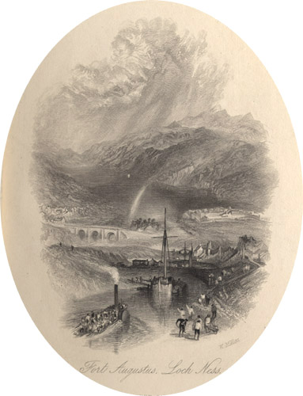

|
 Fort Augustus. Loch Ness. Engraved by W. Miller after J.M.W. Turner (1836).
From: The Prose Works of Sir Walter Scott, Bart. Vol. 26 (Edinburgh: Cadell, 1836). Fort Augustus, on the banks of Loch Ness, was built by General Wade as a garrison town for government troups following the Jacobite Rising of 1715. It was captured by the Jacobites during the 1745/46 uprising but, following the defeat of Prince Charles Edward Stuart ('Bonnie Prince Charlie') at Culloden, became the base from which the Duke of Cumberland organized a campaign of brutal repression. Little now remains of the fort, as its parts were used in the construction of a Benedictine Abbey in 1876. |